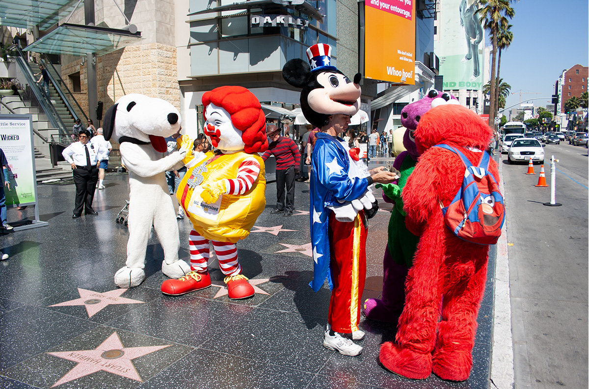
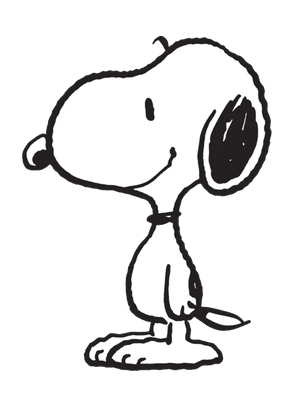
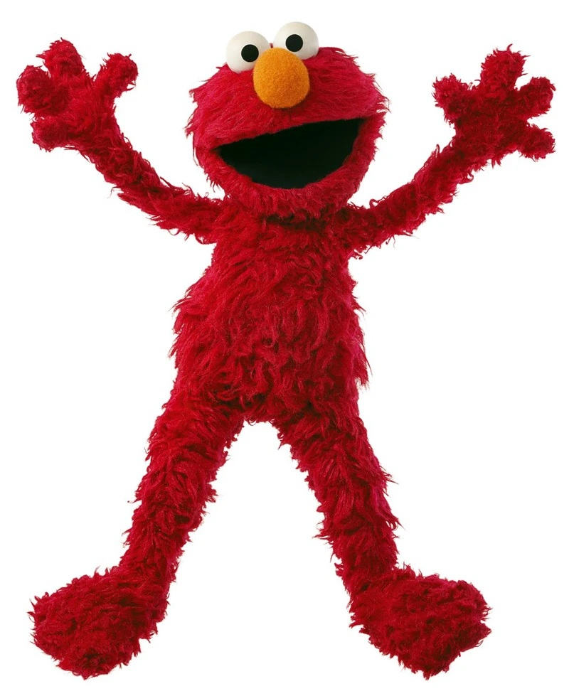
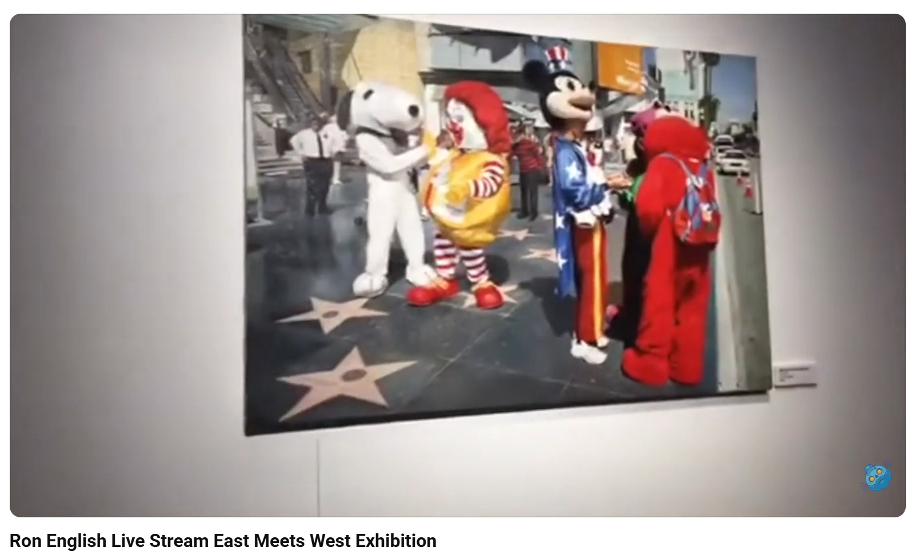
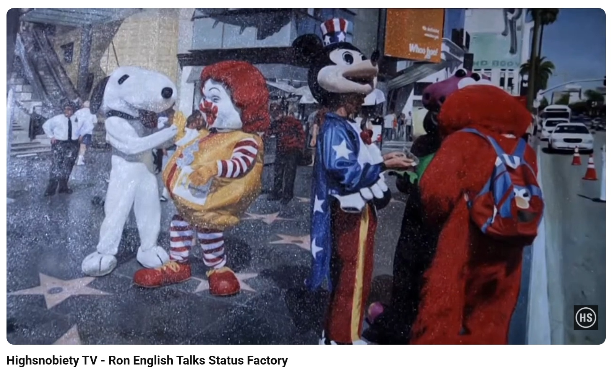
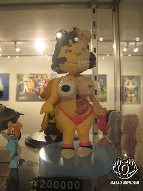
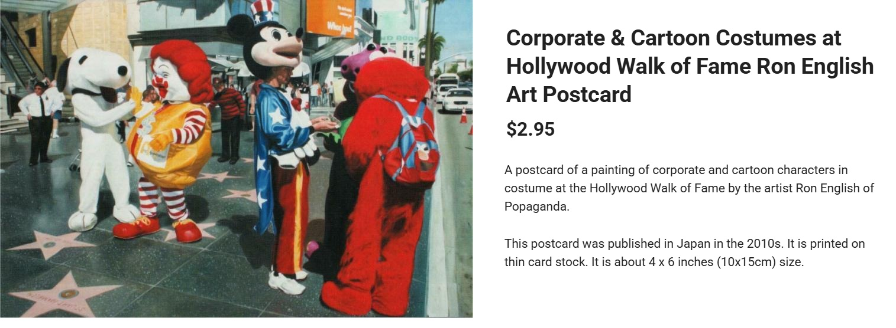
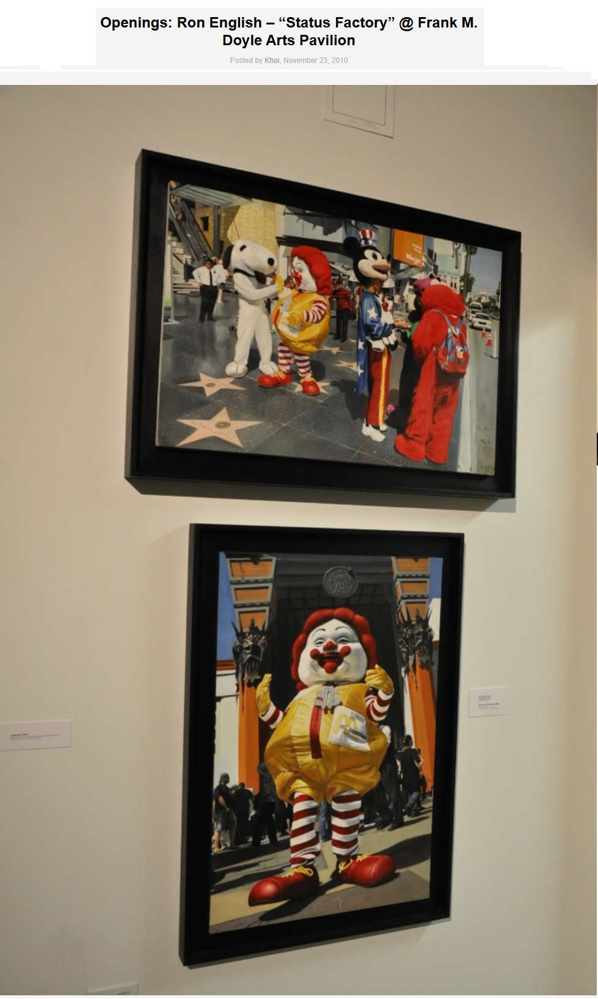

Exhibitions
Mythographic Vicissitudes, FIFTY24SF Gallery, San Francisco, California, US, January 8–29, 2009.
Immortal Underground, Opera Gallery, New York, New York, US, November 12–December 2, 2009.
Status Factory, Opera Gallery, New York, New York, US, September 12–October 29, 2010.
Status Factory – The Art of Ron English, Frank M. Doyle Arts Pavilion / Orange Coast College, Costa Mesa, California, US, November 12–December 17, 2010.
Popaganda in Japan, Public Image. 3D, Tokyo, Japan, July 1–18, 2011.
Ron English Exhibition, Webb’s Auction House & Gallery, Auckland, New Zealand, May 10–20, 2012.
East Meets West Exhibition, May 6–14, 2017.
Literature
Ron English, Status Factory: The Art of Ron English (San Francisco: Last Gasp of San Francisco, 2014), p. 73. ISBN 978-0867197891.
Notes
This work references the Peanuts character Snoopy, Ronald McDonald, Mickey Mouse, Barney from Barney & Friends, and Elmo.
This composition was reproduced as one of the images included in the Ron English Postcard Set sold by Clutter. The product page describes the release as a package of eight postcards, each featuring a different piece of Ron English imagery.
This work appears in video documentation from The Toy Chronicle’s Ron English Live Stream East Meets West Exhibition at 2:55 and in Highsnobiety TV’s Ron English Talks Status Factory at 1:40.
Ancillary Documentation










